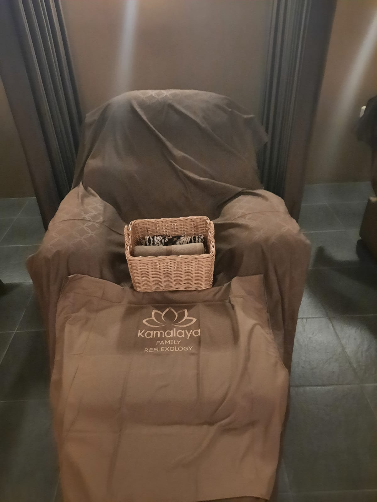
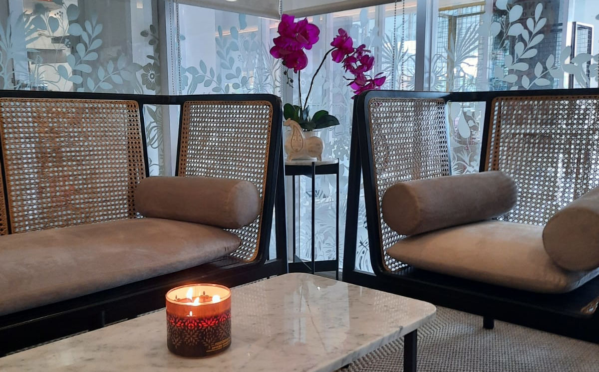
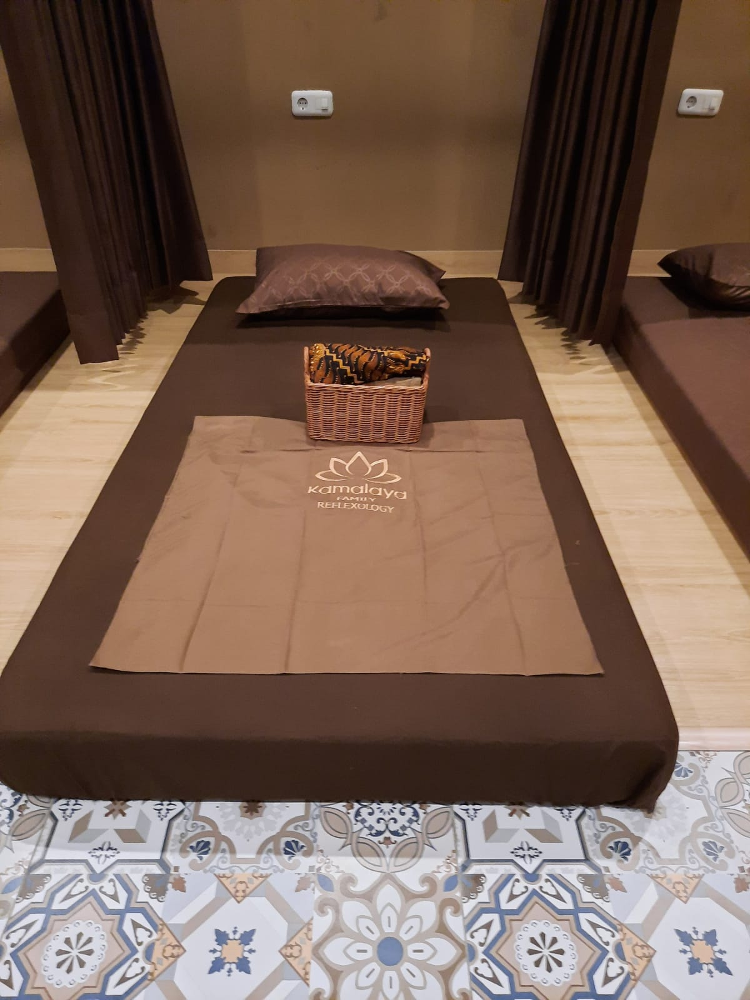
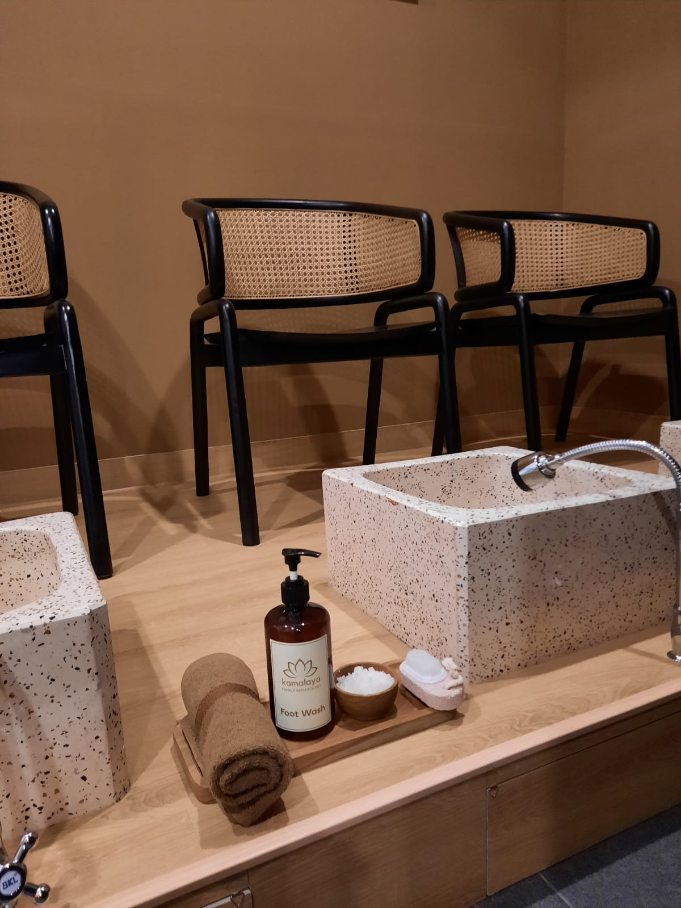

01 / REFLEXOLOGYDuduk. Bersandar. Rileks.
Kenali ruang refleksi kami, dengan kursi bersandar dan nuansa cokelat yang hangat.
Rencanakan waktu Anda ↗
KAMALAYA FAMILY REFLEXOLOGY
Lepaskan penat. Nikmati waktu untuk diri sendiri.
Temukan jeda Anda di Jemursari, Surabaya.
SELAMAT DATANG DI KAMALAYA
Hari-hari terasa lebih berarti saat kita memberi waktu untuk diri sendiri. Di Kamalaya, mulailah dengan melambat, duduk dengan nyaman, dan menikmati suasana di sekitar Anda.
Di Jemursari, Surabaya, Kamalaya menghadirkan berbagai teknik massage, termasuk bamboo dan hot stone. Terapis berpengalaman menyambut Anda dengan perhatian pada kenyamanan, keamanan, dan empati.
Kenali ruang kami ↗PENGALAMAN KAMALAYA
Mulai dari suasananya.
Nikmati setiap jedanya.

01 / REFLEXOLOGYKenali ruang refleksi kami, dengan kursi bersandar dan nuansa cokelat yang hangat.
Rencanakan waktu Anda ↗
02 / MASSAGEJelajahi pilihan massage, termasuk bamboo dan hot stone. Tanyakan layanan dan durasi yang sesuai melalui WhatsApp.
Rencanakan waktu Anda ↗
03 / THE LITTLE DETAILSDari anyaman rotan hingga sentuhan kayu, jelajahi detail yang membentuk suasana Kamalaya.
Lihat lebih dekat ↗A LITTLE MONDAY RITUAL
Awali minggu dengan
tubuh lebih rileks.
Luangkan waktu untuk bernapas lebih pelan.
Lepaskan penat, dan nikmati waktu untuk diri sendiri.
A CLOSER LOOK
YOUR MOMENT OF PAUSE
Pilih rencana kunjungan Anda, lalu tanyakan ketersediaannya melalui WhatsApp.
11.00–20.00 WIB
Konfirmasi jadwal kunjungan melalui WhatsApp.